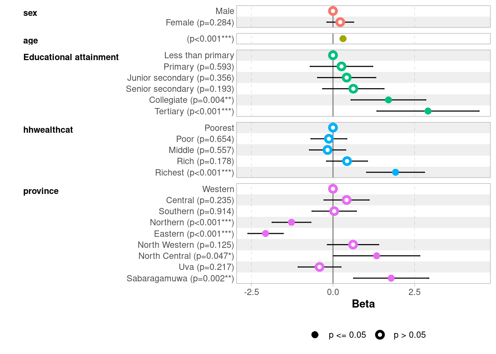
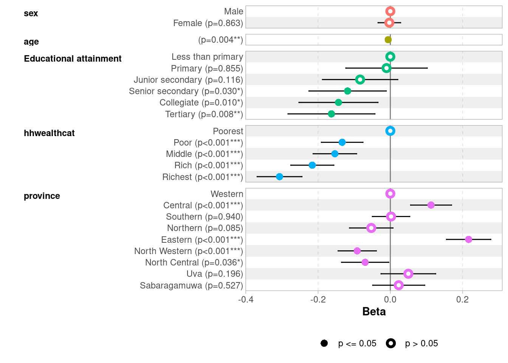

In this session, we move from descriptive to multivariate explanatory statistics with our first regression analysis tool: linear regression. We will also introduce the concept of nested models and discuss how to assess the quality of a regression model.
By the end of this session, you will be able to:
Specify and estimate a linear regression model on weighted survey data
Interpret coefficients, standard errors, and p-values
Compare nested models to assess the contribution of groups of variables
Does weighting matter for regression?
Whether to weight regressions remains debated: while traditional practice recommends always using survey weights to obtain population-representative estimates, another view argues that weights are unnecessary — and reduce precision — when the model is correctly specified and includes all variables driving sample selection.
In practice, we follow the conservative approach and systematically use the survey package, as the complexity of the HIES sampling design makes it unlikely that our models fully account for the selection process.
The survey package in R correctly handles this, taking into account the weights and, when available, the stratification and clustering of the survey design.
9.1 Setting up the Survey Design
In Chapters 2 and 3 we accounted for the survey weights in our descriptive statistics. However, to run survey-weighted regressions, we need to use survey and srvyr which allow to correctly include survey weights in regression analysis.
The first step is to declare the survey design to R using the survey and srvyr package. This creates a special object that carries the information about weights (and potentially strata and clusters). The first package handles survey weights and the second helps to do data manipulation directly on the survey design if necessary.
# Load necessary packagesload.lib <-c("tidyverse", "survey", "srvyr","gtsummary","performance","ggstats")install.lib <- load.lib[!load.lib %in%installed.packages()]for (lib in install.lib) install.packages(lib, dependencies =TRUE)sapply(load.lib, require, character =TRUE)
# Load datasetwd("/home/groups/3genquanti/SoMix/HIES for workshop")edu <-readRDS("edu.rds")
Now declare the survey design:
design_edu <- edu |> srvyr::as_survey_design(weights = finalweight_25per # The weight variable)
Note
as_survey_design is based on svydesign and allows to precisely take into account the parameters of the survey (clusters, strata…). In a more complete analysis, you could use the PSU (primary sampling unit) variable if available — ignoring cluster structure tends to underestimate standard errors. Here, with the 25% sample, this simplified design is sufficient.
9.2 Our Research Question: What Predicts Distance to School?
We will use distance to school (distance) as our dependent variable (the outcome we want to explain). We expect that several factors influence how far a child lives from school (independent variables):
Sex of the child (sex)
Age of the child (age) — older children might attend more distant schools (secondary vs. primary)
Parental education (edu_parent) — children from more educated families may attend more distant (better-quality) schools
Household wealth (hhwealthcat)
Province of residence (province)
Let’s first restrict our sample to children who are currently attending school and for whom distance is available:
edu_school <- edu |>filter(!is.na(distance))design_edu <- edu_school |> srvyr::as_survey_design(weights = finalweight_25per # The weight variable)
Check: Does each group have enough observations?
Before running a regression, always verify that each category of your independent variables has a sufficient number of observations. This is especially important for categorical variables.
Let’s start with a simple model with a two single predictor: the sex of the child and their age.
model1 <-svyglm(distance ~ sex + age, design = design_edu)summary(model1)
Call:
svyglm(formula = distance ~ sex + age, design = design_edu)
Survey design:
Called via srvyr
Coefficients:
Estimate Std. Error t value Pr(>|t|)
(Intercept) 0.23909 0.30096 0.794 0.427
sexFemale 0.25527 0.19905 1.282 0.200
age 0.31255 0.02818 11.092 <2e-16 ***
---
Signif. codes: 0 '***' 0.001 '**' 0.01 '*' 0.05 '.' 0.1 ' ' 1
(Dispersion parameter for gaussian family taken to be 33.06413)
Number of Fisher Scoring iterations: 2
The output shows:
Coefficients: the effect of each predictor on distance (in km)
Standard errors: the precision of the estimate
t-value and p-value: test of whether the coefficient differs from zero
Note
svyglm() from the survey package is the equivalent of lm() but for weighted survey data. By default (without specifying a family argument), it runs a linear regression.
To produce a cleaner output table, we can use tbl_regression() from the gtsummary package:
model1 |>tbl_regression(intercept =TRUE)
Characteristic
Beta
95% CI
p-value
(Intercept)
0.24
-0.35, 0.83
0.4
sex
Male
—
—
Female
0.26
-0.13, 0.65
0.2
age
0.31
0.26, 0.37
<0.001
Abbreviation: CI = Confidence Interval
Interpretation: The coefficient for sexFemale tells us the average difference in distance to school (less than 0.3 km) between boys and girls (in km), controlling for age. A positive coefficient means girls live further from school on average. Notice how the coefficient is not statistically significant here (p-value > 0.05), i.e. the school distance average between boys and girls is not statistically different from 0. However the age coefficient is positive and statistically significant: for each additional age year, the distance to school increases by 0.31 km.
9.4 Multiple Linear Regression
Now let’s add more predictors:
model2 <-svyglm(distance ~ sex + age + edu_parent + hhwealthcat, design = design_edu)summary(model2)
Call:
svyglm(formula = distance ~ sex + age + edu_parent + hhwealthcat,
design = design_edu)
Survey design:
Called via srvyr
Coefficients:
Estimate Std. Error t value Pr(>|t|)
(Intercept) -1.24482 0.56873 -2.189 0.028687 *
sexFemale 0.27220 0.21036 1.294 0.195777
age 0.31441 0.02949 10.663 < 2e-16 ***
edu_parentPrimary 0.02277 0.47192 0.048 0.961528
edu_parentJunior secondary 0.35235 0.43489 0.810 0.417881
edu_parentSenior secondary 0.55487 0.46278 1.199 0.230614
edu_parentCollegiate 1.72361 0.57696 2.987 0.002835 **
edu_parentTertiary 2.62683 0.79207 3.316 0.000922 ***
hhwealthcatPoor 0.02420 0.27918 0.087 0.930941
hhwealthcatMiddle 0.09874 0.28319 0.349 0.727350
hhwealthcatRich 0.64376 0.31498 2.044 0.041053 *
hhwealthcatRichest 2.32546 0.43374 5.361 8.84e-08 ***
---
Signif. codes: 0 '***' 0.001 '**' 0.01 '*' 0.05 '.' 0.1 ' ' 1
(Dispersion parameter for gaussian family taken to be 29.33842)
Number of Fisher Scoring iterations: 2
And a more complete model with province:
model3 <-svyglm(distance ~ sex + age + edu_parent + hhwealthcat + province,design = design_edu)summary(model3)
In a multiple regression, each coefficient represents the effect of that variable holding all other variables constant. For example, the coefficient for edu_parentHigher tells us how much further from school a child with at least one parent having higher education lives, compared to a child with the reference category (here, “Less than primary”), for the same sex, age, and household wealth.
The reference category for each factor variable is the one not shown in the output. R automatically chooses the first level as the reference. You can change it using relevel():
design_edu <- design_edu |>mutate(edu_parent =relevel(factor(edu_parent), ref ="Less than primary"))
9.5 Model diagnostics, Nested Models and Model Comparison
A powerful approach in multivariate analysis is nested model comparison: we start with a minimal model and progressively add blocks of variables, testing whether each block significantly improves the fit. This approach helps us answer questions like: “Does socioeconomic background explain distance to school, above and beyond individual characteristics?”
The logic is cumulative: each model includes all the variables of the previous one, plus a new block. This allows us to isolate the specific contribution of each block of variables:
Age has a strong and stable effect across all models: older children live further from school, likely reflecting the transition from primary to secondary schools which are less densely distributed
Parental education shows a clear gradient only at the top: Collegiate and Tertiary stand out strongly (~1.7 and ~2.6–2.9 km respectively), while lower levels are indistinguishable from “Less than primary”
Household wealth follows a similar pattern: only the Richest quintile shows a clearly significant effect (~2.3 km in Model 2, attenuated to 1.9 km after controlling for province)
Sex is never significant — boys and girls live at similar distances from school
Province matters: Northern and Eastern provinces show significantly shorter distances (-1.3 and -2.1 km), while Sabaragamuwa and North Central show longer distances, possibly reflecting school density differences
9.5.0.2 Comparing model fit: R² and adjusted R²
For linear regression, the standard measure of fit is R² — the proportion of variance in the outcome explained by the model. With svyglm, R² is not directly available, but we retrieve it thanks to the performance package. The adjusted R² penalizes the addition of variables that do not genuinely improve the fit, and is more appropriate when comparing models with different numbers of predictors:
# Comparison of Model Performance Indices
Name | Model | R2 | R2 (adj.)
-----------------------------------
model1 | svyglm | 0.044 | 0.043
model2 | svyglm | 0.101 | 0.098
model3 | svyglm | 0.131 | 0.126
The jump from Model 1 to Model 2 shows a substantial improvement in R² (from 4% to 10%), indicating that socioeconomic variables (parental education, household wealth) explain a meaningful share of the variance in distance to school, well beyond sex and age alone. Adding province in Model 3 brings a modest additional gain (13%), suggesting that geographic location plays an independent but secondary role.
9.5.0.3 Formal test: is the improvement significant?
R² tells us how much fit improves, but not whether this improvement is statistically significant. For this, we use regTermTest(), which performs a Wald test adapted for survey data (equivalent to the F-test):
A significant result (p < 0.05) means the added block of variables contributes meaningfully to explaining distance to school, beyond what was already in the model:
regTermTest(model2, ~ edu_parent + hhwealthcat)
Wald test for edu_parent hhwealthcat
in svyglm(formula = distance ~ sex + age + edu_parent + hhwealthcat,
design = design_edu)
F = 13.88823 on 9 and 3199 df: p= < 2.22e-16
regTermTest(model3, ~ province)
Wald test for province
in svyglm(formula = distance ~ sex + age + edu_parent + hhwealthcat +
province, design = design_edu)
F = 25.73387 on 8 and 3191 df: p= < 2.22e-16
Both tests are highly significant (p < 0.001), confirming that:
Adding parental education and household wealth in Model 2 significantly improves the fit compared to Model 1 (F = 13.9, df = 9)
Adding province in Model 3 further significantly improves the fit compared to Model 2 (F = 25.7, df = 8).
Reporting nested models in the final output?
In a research paper or report, it is not always necessary to present all intermediate models in the final table — sometimes only the most complete model is reported. However, estimating nested models remains an important analytical step: it allows you to assess the specific contribution of each block of variables, to check that coefficients are stable as new controls are added (a sign of robustness), and to detect potential confounding between blocks. The intermediate models are part of the analytical work even when they do not appear in the final output.
9.5.0.4 Reporting coefficients using a coefficient plots
It is often useful to visualize the results of a regression, we can use ggcoef_model and ggcoef_compare from the package ggstats, here for model 3:
ggcoef_model(model3)

And to visualize the coefficients of all three nested models:
After fitting a linear regression, it is good practice to check the main assumptions (linearity, homoscedasticity, normality of residuals). The performance package offers tools to do so, which you can check on this page for more information. It matters mostly if we want to draw precise inference estimates out of our models, less so in the present context where we aim to describe controlled correlations.
Exercise
Try a log transformation of distance to handle the right-skewed distribution: log_distance = log(distance + 1). With a log-transformed dependent variable, a coefficient β then means that a one-unit increase in the predictor is associated with a β × 100 percent change in distance, approximately, for small values of β).
Categorize the age variable into meaningful categories and replace it in the models.
After providing labels for the sector variable, include it in the model as a geographical marker.
Re-run the three models. How does the interpretation change?
9.6 The Linear Probability Model (LPM)
So far we have modelled a continuous outcome (distance to school). But what if our outcome were binary — for example, whether a child walks to school or not? The natural tool for this is logistic regression (see next chapter), but it is worth knowing a simpler alternative: the Linear Probability Model (LPM).
The LPM is simply a standard linear regression applied to a binary outcome (coded 0/1). The coefficients are interpreted directly as percentage point differences in the probability of the outcome.
Our outcome here is whether a child walks to school — the modal category of the transport variable (29 percent of kids to school by walk as we can verify it below):
Walking to school is a substantively interesting outcome: it is associated with living close to school, but also with household poverty (inability to afford transport) and geographic context (rural vs. urban areas).
lpm <-svyglm(walk ~ sex + age + edu_parent + hhwealthcat + province,design = design_edu)tbl_regression(lpm)
Characteristic
Beta
95% CI
p-value
sex
Male
—
—
Female
0.00
-0.03, 0.03
0.9
age
-0.01
-0.01, 0.00
0.004
Educational attainment
Less than primary
—
—
Primary
-0.01
-0.12, 0.10
0.9
Junior secondary
-0.08
-0.19, 0.02
0.12
Senior secondary
-0.12
-0.23, -0.01
0.030
Collegiate
-0.14
-0.25, -0.03
0.010
Tertiary
-0.16
-0.28, -0.04
0.008
hhwealthcat
Poorest
—
—
Poor
-0.13
-0.19, -0.08
<0.001
Middle
-0.15
-0.21, -0.09
<0.001
Rich
-0.22
-0.28, -0.16
<0.001
Richest
-0.31
-0.37, -0.24
<0.001
province
Western
—
—
Central
0.11
0.06, 0.17
<0.001
Southern
0.00
-0.05, 0.05
>0.9
Northern
-0.05
-0.11, 0.01
0.085
Eastern
0.22
0.16, 0.28
<0.001
North Western
-0.09
-0.14, -0.04
<0.001
North Central
-0.07
-0.13, 0.00
0.036
Uva
0.05
-0.03, 0.13
0.2
Sabaragamuwa
0.02
-0.05, 0.10
0.5
Abbreviation: CI = Confidence Interval
ggcoef_model(lpm)

A coefficient of -0.31 for hhwealthcatRichest means that children from the richest households have an 31 percentage point lower probability of walking to school compared to the poorest, all else equal — consistent with richer families being more likely to use private vehicles or public transport.
When to use LPM?
By construction, with a binary dependent variable, residuals are heteroscedastic — their variance is not constant but depends on the predicted values. This does not bias the coefficients but makes classical standard errors incorrect (however, it is worth noting that svyglm computes robust standard errors which solves the problem). This is one reason why logistic regression, which does not suffer from this problem by construction, remains the preferred tool in the next chapter.
The LPM is popular in economics for its simplicity and direct interpretability, and performs well when the outcome is not too rare or too common (roughly between 20% and 80%), which is our case here. It is a useful complement to logistic regression — if both give similar results, it builds confidence. When predicted probabilities fall outside [0, 1], logistic regression is preferable.
Exercise
What are the main dependent variables of your projects?
Run a multivariate linear regression or linear probability model on your outcomes.
How does it confirm or nuances your previous results?